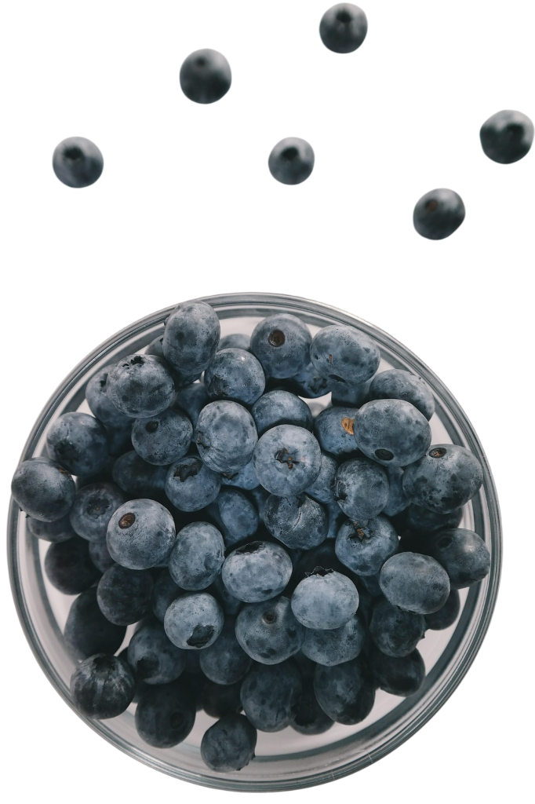

☰
Świeżość i smak
prosto z natury
Naszą misją jest inspirowanie do zdrowszego życia poprzez naturalne, pełne witamin owoce. Wierzymy, że natura daje nam wszystko, czego potrzebujemy, by czuć się dobrze każdego dnia. Promując spożycie borówek, dzielimy się ich niezwykłymi właściwościami i zachęcamy do włączania ich do codziennej diety dla zdrowia i witalności.
